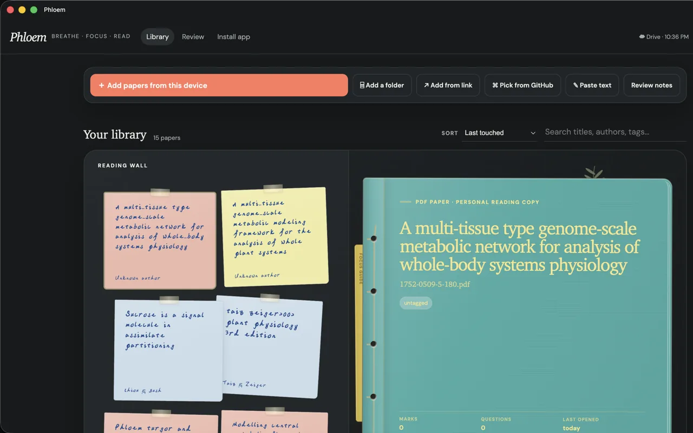
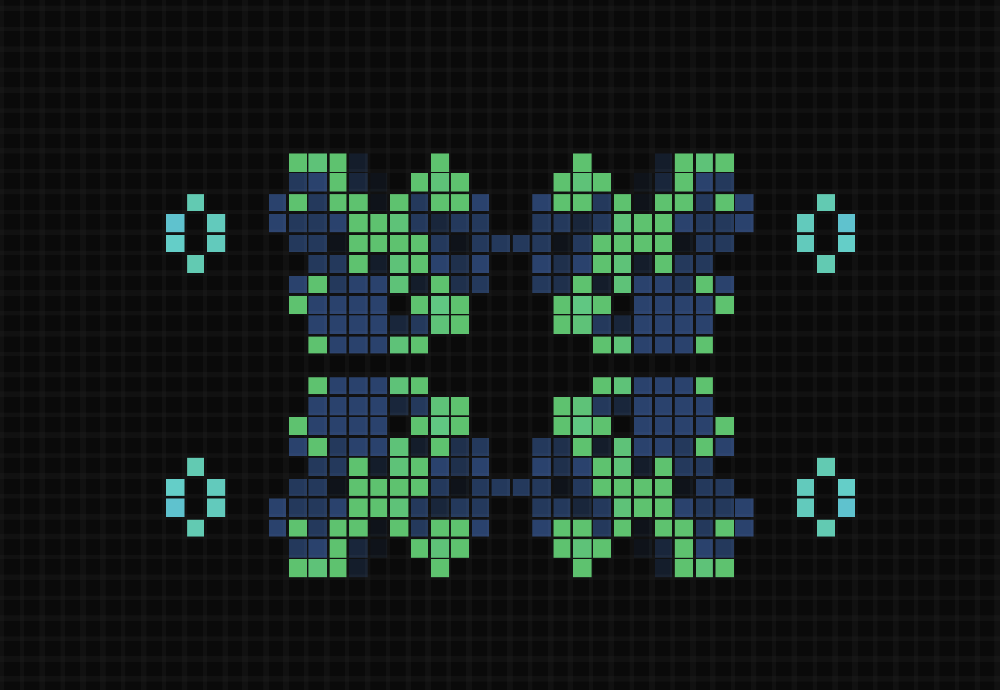
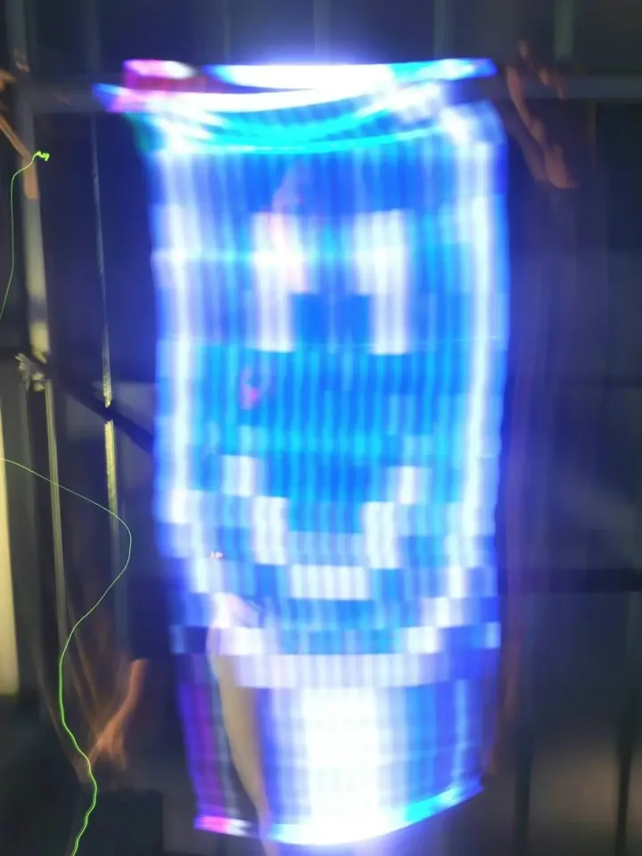
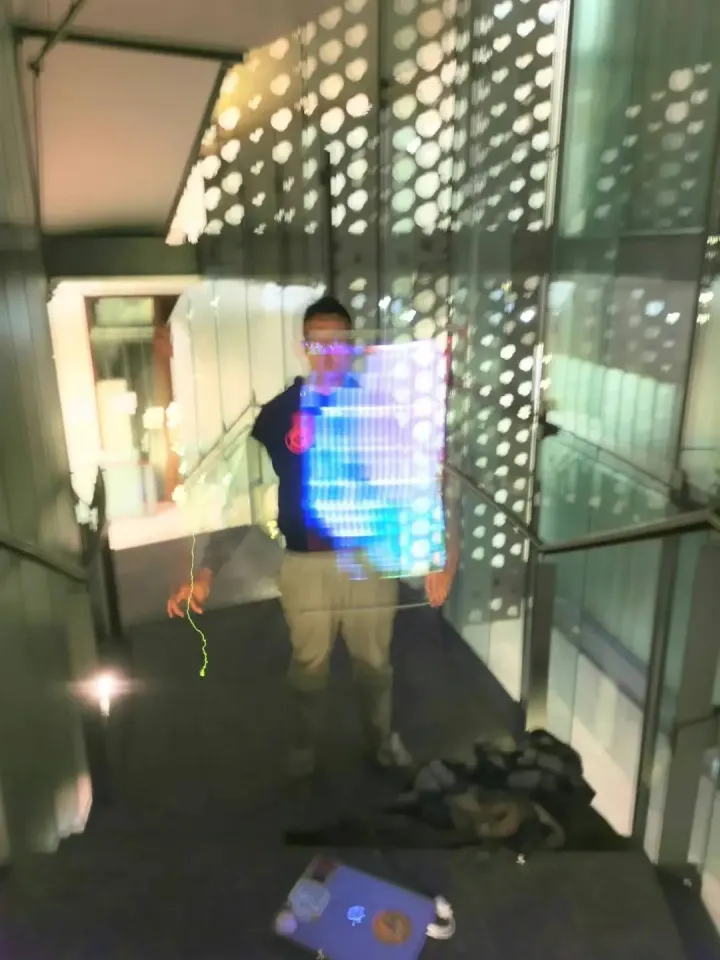

RESEARCH
Computational modeling
Connecting data, sensing, and control to understand complex systems.
Research overview ↓RESEARCH / SYSTEMS / PLAY
I build small, working worlds.
PhD researcher · University of Waterloo
I work across computational modeling, sensing, and control to understand complex systems. Along the way, I build tools for reading, learning, and play.
01 / SELECTED WORK
From living systems to everyday tools.
RESEARCH
Connecting data, sensing, and control to understand complex systems.
Research overview ↓
READING & WRITING
A local-first desk for PDFs and Word drafts, with focus guides, highlights, and notes beside the page.
Open Phloem ↗
LEARNING THROUGH PLAY
Cellular worlds, board games, and co-op experiments. A home for the playful side of building.
Enter the arcade ↗FLAGSHIP RESEARCH · UNIVERSITY OF WATERLOO
> Active PhD research · public summary only
Supervised by Prof. Nasser Mohieddin Abukhdeir and Prof. Christian Euler · Chemical Engineering
02 / ABOUT
My background spans nanotechnology, electrical engineering, scientific computing, and teaching.
Verbatim, from the UofT program page
With the rapid growth of machine learning and the expansion of companies, machine learning and big data have become essential tool sets for ensuring continuous service availability and enhancing customer experiences. Mastering these areas enables me to drive data-driven strategies and strengthens my job prospects in today's competitive landscape.
Research, software testing, and teaching have shaped how I turn ideas into working systems.
Ubuntu, iperf3, TCP/IP, Selenium
May 2022 – August 2022
JavaScript, React, WebDriver IO
January 2020 – April 2020
C#, Selenium
September 2020 – December 2020
Also: quality assurance at Imagine Communications.
Chromatography, UV-Vis Spectroscopy, Polymer Semiconductors
May 2019 – August 2019
Python, PCA, Spectroscopy, Field-Trial Data
2025
Dispute Resolution, Risk Prevention
May 2025 – July 2025
03 / TOOLS & NOTES
Small tools, experiments, and things I’m curious about.
ROUTING SYSTEM · OPEN NOTEBOOK
PHYSICAL COMPUTING · LIGHT


A collection of my thoughts, articles, and book notes.
Life is a game — enjoy every piece of it. Don’t be afraid. Don’t rush.
04 / CONTACT
I’m open to research collaborations, technical conversations, and ambitious systems problems — especially where modeling, sensing, and machine learning overlap.
Email Houfu